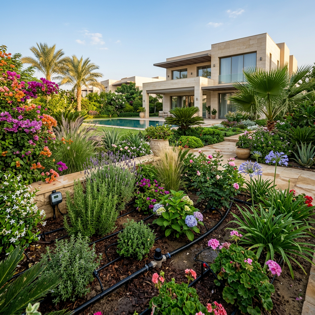
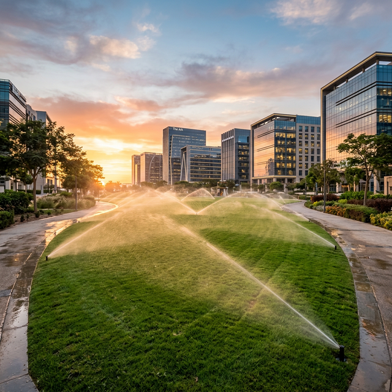
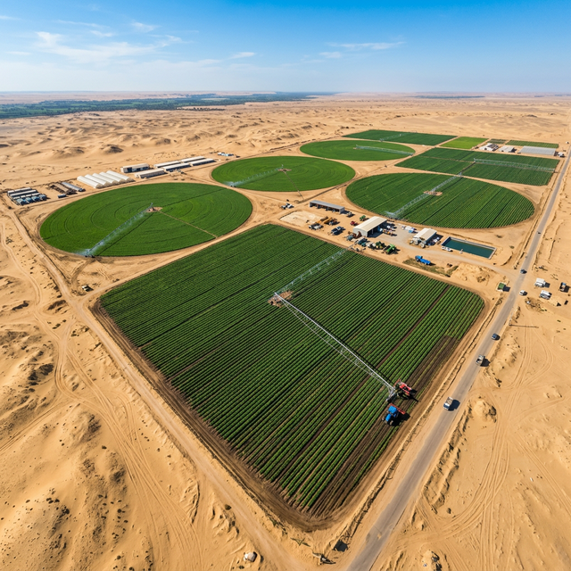

مشاريع تجسد الدقة الهندسية
نستعرض هنا التحديات التي واجهناها والحلول الذكية التي طبقناها لتحويل المشاريع إلى قصة نجاح مستدامة.
قبل وبعد التنفيذ


نظام ري فيلا سكنية
تصميم وتنفيذ شبكة ري بالتنقيط ذكية تتحكم بها حساسات الرطوبة، مما وفر استهلاك المياه وحافظ على ترطيب التربة المثالي لنمو النباتات.
نظام ري مساحات تجارية
نظام ري بالرش (Sprinkler System) يغطي مساحات تجارية واسعة بتوزيع هيدروليكي مثالي يضمن أعلى مستويات الكفاءة والترشيد.

مزرعة إنتاجية مستدامة
دراسة شاملة للتربة وتركيب شبكة ري زراعية متطورة تضمن الإنتاجية العالية تحت أقسى الظروف المناخية بدقة هندسية عالية.